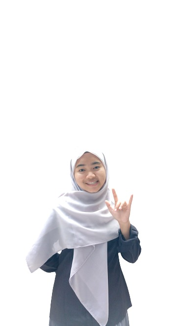
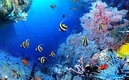

<html>
    <head>
        <title> CV_Irawati Devi_SIK.html </title>
    </head>
    <body bgcolor="lightblue" tekt="black"></body>
        <h1 align="center"> My Curriculum Vitae </h1> 
        <hr/>
        <h2> Biodata Pribadi </h2>
        <ol>
            <li> Nama                   : Irawati Devi </li>
            <li> Tempat, Tanggal Lahir  : Tangerang, 06 Juli 2200 </li>
            <li> Agama                  : Islam </li>
            <li> Jenis Kelamin          : Perempuan </li>
            <li> Alamat                 : Kp. Ranca Serdang RT011/003 Ds. Ranca Iyuh Kec. Panongan Kab. tangerang </li>
            <li> Email                  : irawatidevi@upi.edu </li>
            <li> No.HP                  : 0895331817826 </li>
        </ol>

        <h2> Riwayat Pendidikan </h2>
        <ul type = "circle">
            <li> Sekolah Dasar              : SDN Ranca Iyuh III  </li>
            <li> Sekolah Menengah Pertama   : SMPN 1 Panongan </li>
            <li> Sekolah Menengah Atas      : SMAN 15 Kabupaten Tangerang </li>
            <li> Perguruan Tinggi           : Universitas Pendidikan Indonesia</li>
            <li> Program Studi              : Sistem Informasi Kelautan</li>
        </ul>
        <h2> Gambar Diri </h2>
        
        <h4>Saya sangat suka dan senang ketika melihat kehidupan dibawah Laut yang indah.</h4>
            silahkan klik gambar dibawah ini untuk melihat laut yang indah :)
    <br>
        <a href="https://kehidupandibawahlaut.blogspot.com/2016/10/pemandangan-di-bawah-laut.html">
            
            </a>

    </body>
</html>